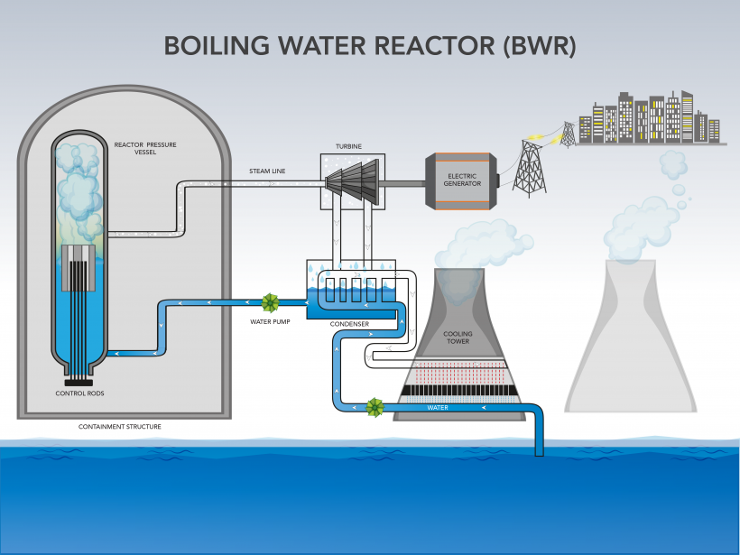

This chart illustrates that PWR-DRYAMB reactors overall for almost half of all Nuclear generated electric power in the U.S. PWR or Pressurized Water Reactors carry heated pressurized water from a nuclear reactor to a steam loop which turns a tubine to generate electricity. More information about PWR reactors can be found here
Schematic of a Boiling Water Reactor taken from energy.gov detailing BWR operating principles.

Capacity factor for Region 3 BWR Mark 1 Reactors. On average, BWR Mark 1 reactors in Region 3 operated at 89.24% capacity over the last 17 years.